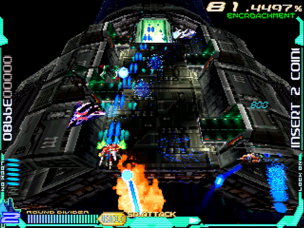
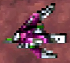
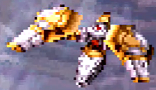
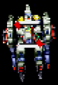

思考領域(Consideration Part)/都市面・夜
知能領域と同じく都市面・・・ですが、その構造は大きく異なっています。配置タイプを問わずやっかいなポイントが存在するため、どのプレイでもなかなか手強い領域です。
ちなみに、攻略本のインタビューいわくベースは「香港」だそうです。
道中
チェックポイント
1つ目
4機目(画像左上)のE061が出現した少し後
2つ目
E522×7機(画像は2機破壊済み)が出揃った辺り
通常パターン
1面の場合
開幕は例によってアイテムキャリアーを右から出し、ハイパーレーザーで誘導灯3やE504ごと破壊。その後は、M325やE356をまとめ撃ちして稼ぎましょう。
前半の山場が、この中ボス的なM20b7。普通にやると、ミサイルだの巨大レーザーだの誘導弾だの手強いです。オマケに、逃げ道をふさいで他のザコが撃ってくる。なので、ためらわずラウンドディバイダー。残った判定にレーザーを浴びせれば、容易に倒せます。
次にやっかいなのがE068ラッシュ。動きが速く、他の敵とまとめて押し寄せ、しかも機雷でロックを奪ってきます。「あれ、今どれをロックしてるんだっけ?」となって、見落とした敵に激突する事もしばしば。レーザーを乱射しつつ、敵と機雷の方へしっかりショットを撒きましょう。
順当に敵を倒していると、侵食率が40%を切って配置タイプ2になります。その場合、後半の中ボスは大型砲台9。全方位にバラまき弾を撃ってきますので、弾を偏りを見て広い隙間を抜けましょう。耐久力はレーザー7本分と低めなので、棒状レーザーが飛んでくる前に倒したいところ。
上から降ってくるE3810を処理すると、続けて大型ミサイル発射サイト11のお出ましです。配置タイプ1だと2カ所、タイプ2だと全箇所のハッチが開きます。実質的に破壊可能弾しか撃ってこないので、落ち着いてレーザーを浴びせつつ、横からミサイルにえぐられないようご注意を。
ここまで配置タイプ2を前提としましたが、侵食率を下げすぎてタイプ3にしてしまった場合、大型砲台9ではなく多方向レーザー砲台12が出現します。攻撃がおっかないので、手前を壊すにとどめてやり過ごしましょう。1つ壊すと次が出るので、画像のように正面がお留守なら耐えるのも手です。
最後に待ち受けるのはM3113。画面奥に押しやってスクロールアウトし、そのスキにフルロック。お供ごとハイパーレーザーで吹き飛ばしてしまいましょう。
2・3面の場合
この領域は、前半の敵編成が配置タイプでわりと変わります。なので、1面以外では侵食率によってパターンを変えるケースもあります。
大きな違いは、開幕にM0214が追加されること。1機目はアイテムキャリアーへのハイパーレーザーに巻き込み、しっかりショットを当て続けて倒します。2, 3機目は他の敵がいないため、速攻で処理できるでしょう。
もう1つ面倒なのが、M20b7と共にE068が出てくる点。前面が感情領域とか意識領域だった場合、たいていラウンドディバイダーがリチャージできていないので危険です。E068を最優先で倒しつつ、ミサイルの曲線も見落とさないように。
それを耐えると、次は巨大レーザーで逃げ道をふさぎながらE1215が撃ってきます。ここは本体の片方をハイパーレーザーしつつ、前へ出て自機狙いから逃げるしかありません。レーザーが消えたら、すぐ手前に戻りましょう。
そして、レーザーを全方位にバラまいてきます。速いしエグいし、とにかくここまでにラウンドディバイダーを撃ちたいところ。画像のように手前のミサイルポッドへレーザーを連射して、何が何でもリチャージすべし。
以降は1面の場合と同様に進めます。
ランク調整パターン
1面の場合
アイテムキャリアーのキャリアー部分を除いて、敵を逃がします。M20b7も逃がしますが、そうなると怖いのがミサイル。けっこうな勢いで連射してくる上、手元で急に曲がる軌道が事故を誘います。なるべく正面からショットで壊し、逃がさないようにしましょう。
M20b7は退場する辺りも危険で、E522×7機が自機狙いを撃ってきます。きっちりショットで倒しましょう。また、画像を見ると左下にさりげなくミサイルが。かなり短時間で襲い来る事故要因なので、十二分に警戒したいところ。
配置タイプ1の場合、後半の中ボスはおらず代わりにE6016が24機やってきます。倒すと降ってくる撃ち返しが少々クセモノで、手前で逃げようとしている機が急に降らせてくるケースも。90%を超えない分については、逃がしてしまうのもアリでしょう。
あとは大型ミサイル発射サイト11を倒しつつ、侵食率80%を意識して適宜逃がしていけばOKです。
2面の場合
開幕にアイテムキャリアーへハイパーレーザーをかまし、出現するならM0214も倒します。その後は敵を逃がしつづけ、M20b7出現時で侵食率70%ぐらいに調整しておきます。これなら、速攻しても60%台を維持できるはず。
あとはローリスクなタイミングで敵を逃がし、代わりにE6016や大型ミサイル発射サイト11を倒しましょう。侵食率60%前後でボス戦に突入できればOKです。
3面の場合
基本的には2面の場合と同様で「60%」を「40%」に読み替えて下さい。
ただし3面で侵食率が高いのもリスクなので、後半はあえて配置タイプ2で進めても良いかもしれません。最速でボスを倒しても、侵食率は9%ほど増えます。それを考慮に入れると、高くても30%ぐらいにとどめるのが無難でしょう。
ボス「Pro-tor/Night」
昼の面と同様のパターンが使えますので、そちらを参照してください。
1. E06「ζ Morphemes」 ↩
2. E52「τ Morphemes」 ↩
3. 誘導灯「Syntax B-6」 ↩
4. E50「ρ Morphemes」 ↩
5.M32「Lexicon S-5」 ↩
6.E35「Syntax A-2」 ↩
7. M20b「Lexicon γ4b」 ↩
8. E06「ζ Morphemes」 ↩
9. 大型砲台「Syntax A-9」 ↩
10.E38「π Morphemes」 ↩
11. 大型ミサイル発射サイト「Syntax A-10」 ↩
12. 多方向レーザー砲台「Syntax A-11」 ↩
13.M31「Lexicon R4」 ↩
14. M02「Lexicon M5」 ↩
15.E12「ι Morphemes」 ↩
16. E60「ψ Morphemes」 ↩